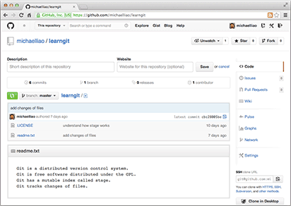

现在的情景是，你已经在本地创建了一个 Git 仓库后，又想在 GitHub 创建一个 Git 仓库，并且让这两个仓库进行远程同步，这样，GitHub 上的仓库既可以作为备份，又可以让其他人通过该仓库来协作，真是一举多得。
首先，登陆 GitHub，然后，在右上角找到“Create a new repo”按钮，创建一个新的仓库：
在 Repository name 填入
learngit
，其他保持默认设置，点击“Create repository”按钮，就成功地创建了一个新的 Git 仓库：

目前，在 GitHub 上的这个
learngit
仓库还是空的，GitHub 告诉我们，可以从这个仓库克隆出新的仓库，也可以把一个已有的本地仓库与之关联，然后，把本地仓库的内容推送到 GitHub 仓库。
现在，我们根据 GitHub 的提示，在本地的
learngit
仓库下运行命令：
$ git remote add origin git@github.com:michaelliao/learngit.git
请千万注意，把上面的
michaelliao
替换成你自己的 GitHub 账户名，否则，你在本地关联的就是我的远程库，关联没有问题，但是你以后推送是推不上去的，因为你的 SSH Key 公钥不在我的账户列表中。
添加后，远程库的名字就是
origin
，这是 Git 默认的叫法，也可以改成别的，但是
origin
这个名字一看就知道是远程库。
下一步，就可以把本地库的所有内容推送到远程库上：
$ git push -u origin master
Counting objects: 19, done.
Delta compression using up to 4 threads.
Compressing objects: 100% (19/19), done.
Writing objects: 100% (19/19), 13.73 KiB, done.
Total 23 (delta 6), reused 0 (delta 0)
To git@github.com:michaelliao/learngit.git
* [new branch] master -> master
Branch master set up to track remote branch master from origin.
把本地库的内容推送到远程，用
git push
命令，实际上是把当前分支
master
推送到远程。
由于远程库是空的，我们第一次推送
master
分支时，加上了
-u
参数，Git 不但会把本地的
master
分支内容推送的远程新的
master
分支，还会把本地的
master
分支和远程的
master
分支关联起来，在以后的推送或者拉取时就可以简化命令。
推送成功后，可以立刻在 GitHub 页面中看到远程库的内容已经和本地一模一样：

从现在起，只要本地作了提交，就可以通过命令：
$ git push origin master
把本地
master
分支的最新修改推送至 GitHub，现在，你就拥有了真正的分布式版本库！
当你第一次使用 Git 的
clone
或者
push
命令连接 GitHub 时，会得到一个警告：
The authenticity of host 'github.com (xx.xx.xx.xx)' can't be established.
RSA key fingerprint is xx.xx.xx.xx.xx.
Are you sure you want to continue connecting (yes/no)?
这是因为 Git 使用 SSH 连接，而 SSH 连接在第一次验证 GitHub 服务器的 Key 时，需要你确认 GitHub 的 Key 的指纹信息是否真的来自 GitHub 的服务器，输入
yes
回车即可。
Git 会输出一个警告，告诉你已经把 GitHub 的 Key 添加到本机的一个信任列表里了：
Warning: Permanently added 'github.com' (RSA) to the list of known hosts.
这个警告只会出现一次，后面的操作就不会有任何警告了。
如果你实在担心有人冒充 GitHub 服务器，输入
yes
前可以对照
GitHub 的 RSA Key 的指纹信息
是否与 SSH 连接给出的一致。
要关联一个远程库，使用命令
git remote add origin git@server-name:path/repo-name.git
；
关联后，使用命令
git push -u origin master
第一次推送 master 分支的所有内容；
此后，每次本地提交后，只要有必要，就可以使用命令
git push origin master
推送最新修改；
分布式版本系统的最大好处之一是在本地工作完全不需要考虑远程库的存在，也就是有没有联网都可以正常工作，而 SVN 在没有联网的时候是拒绝干活的！当有网络的时候，再把本地提交推送一下就完成了同步，真是太方便了！